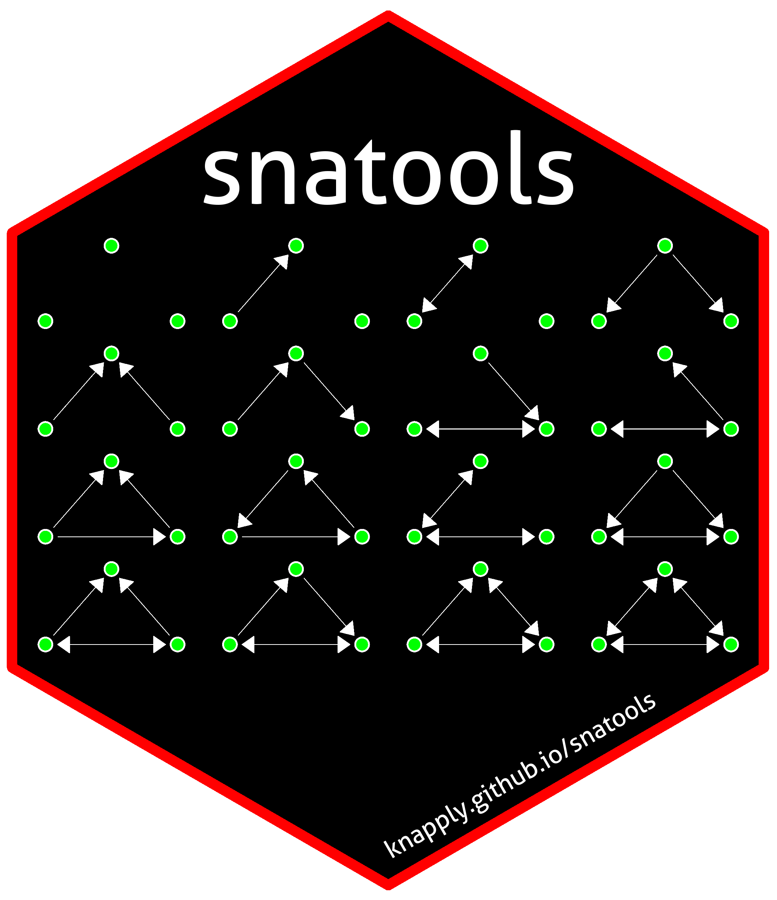

snatools 
{kind=link}
An R toolkit to bridge graph classes and streamline network analytic workflows.
Installation
# Install {devtools} if you haven't already.
if (!requireNamespace("devtools", quietly = TRUE)) {
install.packages("devtools")
}
## Install {snatools} from GitHub.
devtools::install_github("knapply/snatools")
## Load {snatools}.
library(snatools)Usage
library(snatools)
network_obj <- snatools:::build_test_graph("nw") %>%
clean_graph()
# identical?
network_obj %==% as_network(as_igraph(network_obj))
#> [1] TRUE
igraph_obj <- snatools:::build_test_graph("ig") %>%
clean_graph()
# identical?
igraph_obj %==% as_igraph(as_network(igraph_obj))
#> [1] TRUEDevelopment Test Results
devtools::test()
#> Loading snatools
#> Loading required package: testthat
#> Testing snatools
#> v | OK F W S | Context
#>
/ | 0 | Build edge lists: igraph
- | 1 | Build edge lists: igraph
\ | 2 | Build edge lists: igraph
| | 3 | Build edge lists: igraph
/ | 4 | Build edge lists: igraph
v | 4 | Build edge lists: igraph
#>
/ | 0 | Build edge lists: network
- | 1 | Build edge lists: network
\ | 2 | Build edge lists: network
v | 2 | Build edge lists: network
#>
/ | 0 | Round trip conversion: simple graph
- | 1 | Round trip conversion: simple graph
v | 1 | Round trip conversion: simple graph
#>
/ | 0 | Round trip conversion: undirected graphs
- | 1 | Round trip conversion: undirected graphs
\ | 2 | Round trip conversion: undirected graphs
v | 2 | Round trip conversion: undirected graphs
#>
/ | 0 | Round trip conversion: directed graphs
- | 1 | Round trip conversion: directed graphs
\ | 2 | Round trip conversion: directed graphs
v | 2 | Round trip conversion: directed graphs [0.1 s]
#>
/ | 0 | Round trip conversion: bipartite graphs
- | 1 | Round trip conversion: bipartite graphs
\ | 2 | Round trip conversion: bipartite graphs
v | 2 | Round trip conversion: bipartite graphs
#>
/ | 0 | E-I Index: directed
- | 1 | E-I Index: directed
\ | 2 | E-I Index: directed
v | 2 | E-I Index: directed
#>
/ | 0 | E-I Index: undirected
- | 1 | E-I Index: undirected
\ | 2 | E-I Index: undirected
v | 2 | E-I Index: undirected
#>
#> == Results ============================================================
#> Duration: 0.5 s
#>
#> OK: 17
#> Failed: 0
#> Warnings: 0
#> Skipped: 0